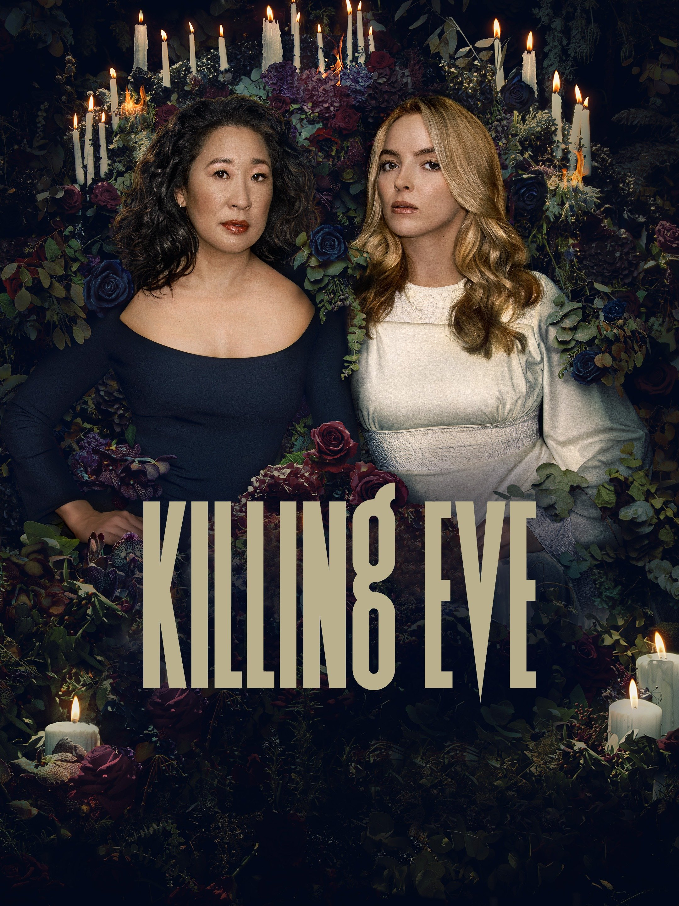

Killing Eve
4/10
SPOILERS! It pains me to write this, gentle readers, the last season of Killing Eve ruined the entire show for me. How dare they kill Villanelle! It’s such a cliché ending to kill off one of the characters in a lesbian relationship. We’re waiting the whole time for them to get together, and when they finally do, the writers kill off Villanelle. Fuck you, Phoebe Waller-Bridge. You’re a shitty writer. The book was significantly better than the show. I doubt that the writers of Killing Eve ever read the actual series written by Luke Jennings. Disappointing.